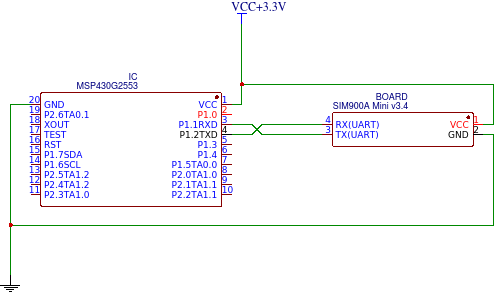
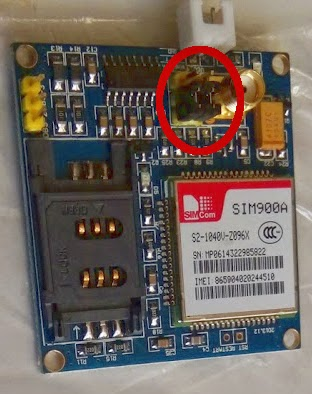
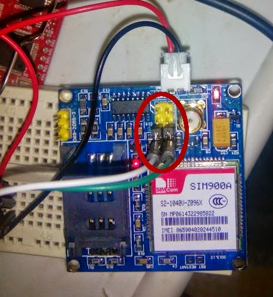
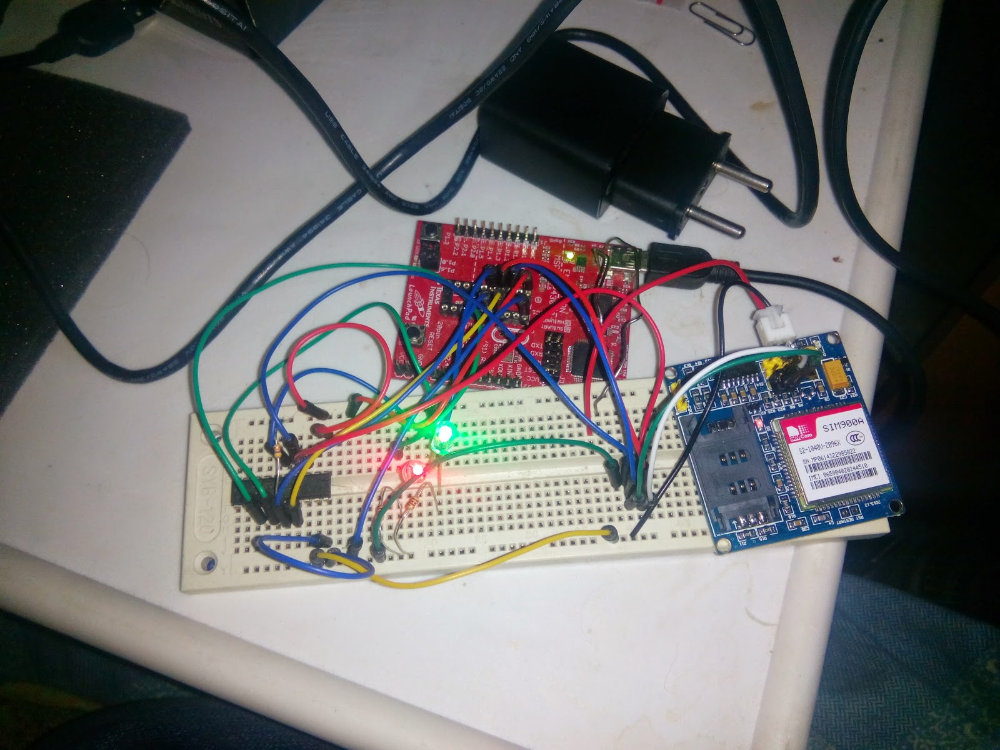

Пов’язані статті серії:
- Чому не варто купувати GSM-модуль SIM900A (огляд плати)
- UART-монітор на базі MSP430 для налагодження зв’язку
1. Схема підключення та живлення
Схема підключення UART типова: лінія RX мікроконтролера з’єднується з TX модуля, а TX — з RX.
Щодо живлення SIM900A: для базового запуску та перевірки мені вистачило 3.3V безпосередньо з шини плати LaunchPad. Хоча за даташитом для впевненої роботи GSM-радіотракту потрібно від 3.4V до 4.5V (рекомендовано 4.0V) зі струмом у піках до 2A, для ініціалізації логіки 3.3V спрацювало:

2. Конфігурація джамперів плати
За замовчуванням джампери на платі SIM900A Mini встановлені для зв’язку через перетворювач рівнів MAX232 (для підключення до COM-порту ПК):

Але нам не потрібен перетворювач для RS-232, оскільки мікроконтролер працює з рівнями TTL (3.3V). Нам потрібен прямий UART-сигнал.
Тому перемикаємо джампери так, щоб вони «висіли» лише на одному піні роз’єму, а в другий відкритий пін вставляємо дроти:

На фото: зелений провід — RX, білий — TX.
3. Мінімальна програма для середовища Energia
Завдання мінімум для першого запуску — надсилати команду AT, доки модуль не відповість OK. Це свідчить про те, що модуль прокинувся, синхронізував швидкість передачі (auto-bauding) і готовий приймати команди.
int incomingByte = 0;
void setup() {
Serial.begin(9600);
pinMode(P1_6, OUTPUT);
pinMode(P1_7, OUTPUT);
digitalWrite(P1_6, LOW);
digitalWrite(P1_7, LOW);
}
int isOK() {
if (incomingByte == 'O') {
incomingByte = Serial.read();
if (incomingByte == 'K') {
return 1;
}
}
return 0;
}
void loop() {
boolean ok = false;
do {
do {
digitalWrite(P1_6, HIGH);
Serial.println("AT");
digitalWrite(P1_6, LOW);
delay(500);
} while (!Serial.available());
incomingByte = Serial.read();
// Пропуск сміття в буфері
while (Serial.available() && incomingByte == 255) {
incomingByte = Serial.read();
}
while (Serial.available()) {
if (isOK()) {
ok = true;
} else {
incomingByte = Serial.read();
}
}
} while (!ok);
// Успішна синхронізація
while (1);
}
Зібраний тестовий стенд:

Цей матеріал було перенесено зі старого блогу antigluk.blogspot.com.